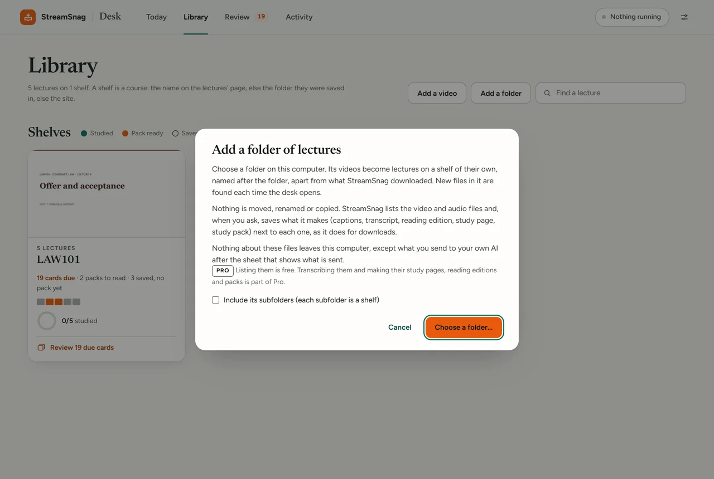
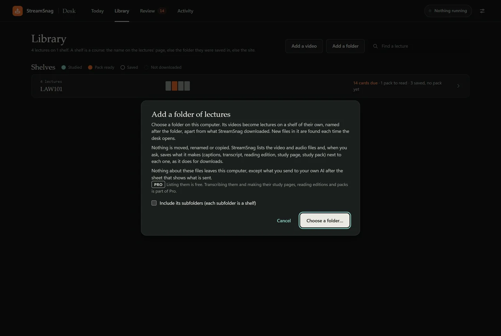

Launching soon. StreamSnag 1.6 is not released yet, and Pro is not on sale yet.Launching soon. 1.6 is not released. Pro is not on sale.
StreamSnagStudy tools
From a lecture to a study pack.
One lecture, step by step: its transcript, a reading edition, a study page with the slides in step, a study pack and a few cards a day. Then the library, for every lecture you have.

Free
Saving the lecture, and saving the captions it already has as a transcript. No account, no limits.
Pro
Everything else on this page: transcribing, the reading edition, the study page, the study pack, review, and studying videos you already had. Your first lecture is free, then US$39.97 a year.
Your own AI
Only the study pack uses AI, and it runs on your own AI account. On a Claude or ChatGPT subscription you already have, nothing extra. With a pay-as-you-go key it is billed by your provider, never by StreamSnag.
One lecture, from start to finish.
Every picture below is StreamSnag itself, on one invented lecture: a 23-minute first-year law class with nine slides.
LAW101, lecture 4: Offer and acceptance. Open its samples
- The video lecture
- Transcript
- Reading edition
- Study page
- Study pack
- Cards due today
-
Free from captionsPro without them
The transcript.
Every word, with the minute it was said, saved next to the video. From the lecture's own captions it is free; with none, Pro transcribes it on your computer, with no minute limits.

-
ProNo AI
The reading edition.
The lecture set out to read: headings, a contents list, a minute beside every paragraph, spoken lists set out as lists and the lecturer's signposts marked. No word is changed. 23 minutes became a 12-minute read.


Marked as the lecturer's emphasis
11:11Lecturer: And this will be on the exam, I am telling you now. Every year a problem question has an advertisement in it, and every year some people write, adverts are invitations to treat, end of story.
-
ProNo AI
The study page, with the slides in step.
The video, the slides and the transcript side by side, following along as it plays. Each slide gets its minute, and one it is unsure of is marked as approximate.


-
ProYour AI
One sheet before anything is sent.
It says what the pack will make, what is sent, to which AI account, and roughly what it costs. A pack style sets it all in one click: “Full pack”, “Quick review”, or one you saved yourself.
![The study desk's sheet Before the AI reads this lecture, for Offer and acceptance. Makes: the pack styles Full pack, Quick review and Before the exam, a style saved by the user, chosen; Study guide, Deeper review sheets, Practice quiz and self-test, Flashcards, Explanations beyond the lecture, Key figures from the slides, Cleaned transcript, Reading edition; about 14 flashcards and about 8 practice questions for this lecture. Sends the lecture's transcript and the text of its slides, to DeepSeek, your API key. AI use: in all about 21 requests, roughly 6 to 10 US cents at today's prices. Cost: charged to your DeepSeek account. Buttons Not now and Make the study pack.](../img/shots/pack-sheet-1x.webp)
![The study desk's sheet Before the AI reads this lecture, for Offer and acceptance. Makes: the pack styles Full pack, Quick review and Before the exam, a style saved by the user, chosen; Study guide, Deeper review sheets, Practice quiz and self-test, Flashcards, Explanations beyond the lecture, Key figures from the slides, Cleaned transcript, Reading edition; about 14 flashcards and about 8 practice questions for this lecture. Sends the lecture's transcript and the text of its slides, to DeepSeek, your API key. AI use: in all about 21 requests, roughly 6 to 10 US cents at today's prices. Cost: charged to your DeepSeek account. Buttons Not now and Make the study pack.](../img/shots/pack-sheet-dark-1x.webp)
-
Pro
Pack styles.
Keep the choices you make often under a name. A style can be the default for a whole course, and the one last used on a lecture is offered first next time.
Makes
Full packQuick reviewBefore the exam- Study guide
- Deeper review sheets
- Practice quiz and self-test
- Flashcards
- Explanations beyond the lecture
- Key figures from the slides
- Cleaned transcript
- Reading edition
About 14 flashcards and about 8 practice questions for this lecture.
“Before the exam” is a style saved with “Save as a style…”: everything, with 36 flashcards an hour. -
ProWritten by your AI
The study guide.
Key ideas in plain words, each with its minute, its slide and the lecturer's own words; review sheets, easily confused pairs and a glossary. It is checked against the transcript and can still be wrong, so every point leads back to the recording.


-
ProWritten by your AI
The quiz.
New cases to try the lecture's ideas on. Pick an answer to see why each option is right or wrong, and a self-test to answer from memory.


-
ProNo AI to review
Flashcards, a few a day.
The pack's flashcards wait in the study desk's Review. Each shows the lecturer's words and opens the lecture at its minute, and comes back on its own day. Prefer Anki? Each pack also saves a file for it.


Then the library, for every lecture you have.
The study desk keeps your lectures on shelves, one per course, with what is due today on top.
-
Pro
Shelves, by course.
What StreamSnag downloaded sits under “Downloaded with StreamSnag”. Videos you already had sit apart, under “Your own files”. A shelf can be renamed on the desk; no file or folder is.


-
Listing is freePro to study them
Add a video, or a folder.
Any video or audio file already on your computer, or a folder of them: each folder becomes a shelf, and new files in it are found each time the desk opens. Nothing is moved, renamed or copied. It needs the free local helper.


This lecture's study pack was 21 requests to DeepSeek and cost about US$0.04 at DeepSeek's peak-hours price. Pro is US$39.97 a year, US$4.99 a month or US$99.95 once. AI use is never part of StreamSnag's price.
Sample reading edition Sample study page Sample study guide All the samples
Start with tonight's lecture.
Saving is free, and Pro takes your first lecture from start to finish, free, with no card.
How it works Pricing What the AI costs
Get StreamSnag, free